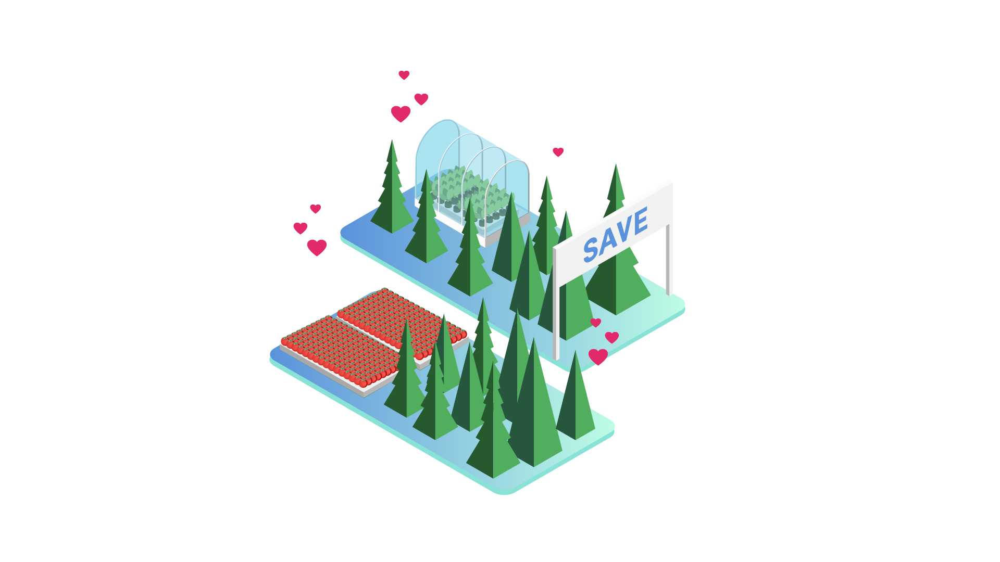
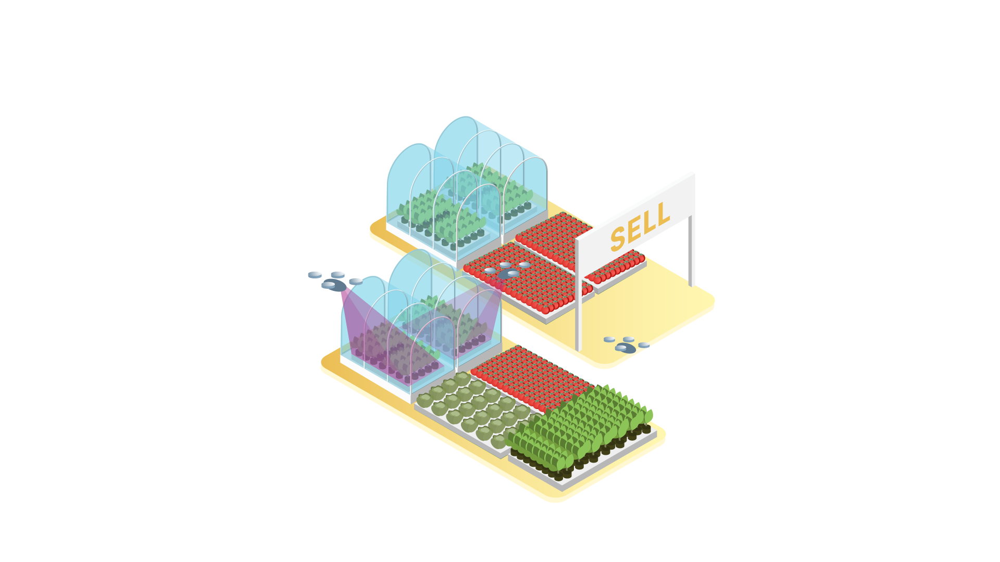
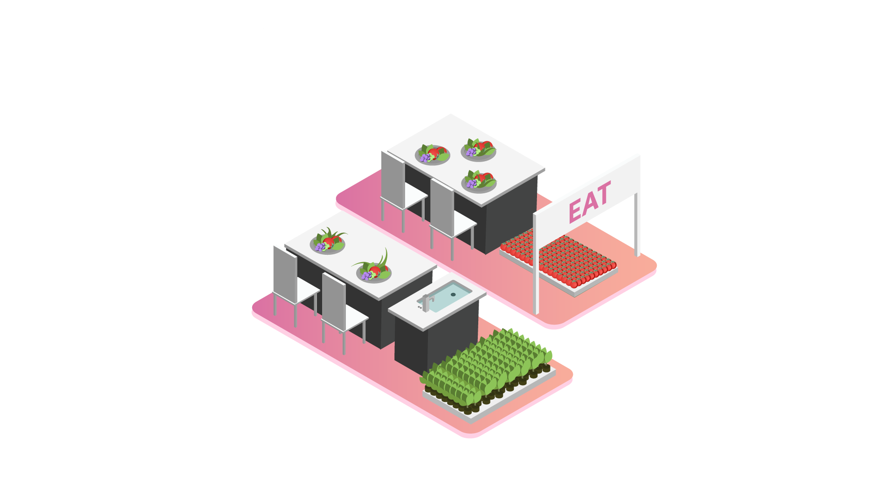

Environmental Grower
Moving these crops away from farmlands and into Herban modular gardens can stop land degredation in its tracks.

Proftability Grower
Using our proprietary drone delivery system get access to thousands of potential grocery shoppers without ever leaving your doorstep.

Consumption Grower
We spend hundreds of dollars on "day old" grocery food. Growing for yourself and your community can solve that problem.
